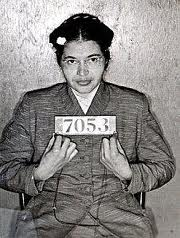
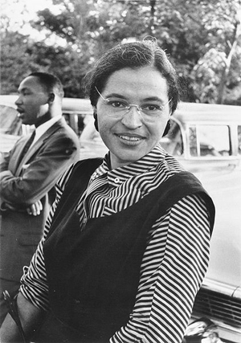

|
|
رزا پارکز، "زنی که از جایش بلند نشد"
پنج شنبه19 بهمن 1391

تغییر برای برابری - ترجمه صبری نجفی
چهار فوریه سالروز تولد رزا پارکز نماد جنبش مدنی امریکا است. صد سال پیش در روز ۴ فوریه ۱۹۱۳ رزا پارکز در شهر توگسکی در ایالت آلاباما بدنیا آمد.
رزا پارکز زن سیاه پوست آمریکایی که از نژاد پرستی رنج می برد و خود فعال حقوق مدنی بود در روز اول دسامبر ۱۹۵۵ وقتی از محل کارش در یک خیاطخانه به خانه برمی گشت، مثل همیشه سوار اتوبوسی شد که سیاه پوستان حق نشستن در کنار سفید پوستان را نداشتند. رزا از خستگی کار بر اولین صندلی خالی که پیدا کرد نشست ، صندلیی که مخصوص سفید پوستان بود. وقتی مسافران جدید که بیشتر سفید پوست بودند سوار شدند، راننده از او خواست که از جایش بلند شود و صندلی را به یک مسافر سفید پوست بدهد، رزا که از مدتها از این شهروند دست دوم بودن خسته بود و مخصوصا اینکه می بایست به علت نبودن جا سر پایش بایستد، قبول نکرد و به اصرار راننده هم اهمیتی نداد، همین باعث شد که راننده در راه توقف کند و موضوع را به دو پلیس بگوید، رزا پارکز برای این نافرمانی به زندان روانه شد.

بعدها او به لقب "زنی که از جایش بلند نشد" شهره شد. داستان نافرمانی رزا پارک و زندانی شدنش باعث شد که جنبش حقوق مدنی و ضد نژاد پرستی در شهر مونتگمری عکس العمل نشان دهند.
مارتین لوتر کینگ که در آن زمان کشیش بود و از آشنایان رزا پارکز، در شب بازداشت رزا همراه با فعالان جنبش افرو امریکاییهای شهر گردهماییی تشکیل دادند. روز بعد وسایل نقلیه شهر بایکوت را شروع کردند و اتوبوسهای زیادی اعتصاب کردند. اعتصاب ۳۸۱ روز طول کشید یعنی تا روزی که قانون تبعیض نژادی در آن جا ملغی شد . مارتین لوترکینگ در این باره می نویسد: "این کار رزا پارکز خواسته بی حد او بود برای زنده نگاه داشتن کرامت انسانی و آزادی" و اضافه می کند که" رزا به نام سالهای سال توهین های انباشته شده " و برای آرمانهای بی حد و حصر نسلهای آینده آنجا نشست.
در سال ۱۹۵۶ دیوان عالی ایالات متحده امریکا به اتفاق آرا حکم کرد که تبغیض در انوبوسهای همگانی بر خلاف قانون اساسی است و این تبعیض برای همیشه در ایالت الاباما لغو شد. رزا پارکزاز آن به بعد به عنوان نماد جنبش مدنی شناخته شد.
گرچه رزا سالهای بعد از این پیروزی بارها مورد خشم نژاد پرستان قرار گرفت و حتی مجبور به استعفا از کارش شد ولی در سالهای ۱۹۶۶ تا ۱۹۸۸ به عنوان منشی برای یکی از اعضای کنگره کار کرد و سازمانی هم به یاد شوهرش به اسم "پیشرفت شخصی" بنیاد نهاد. در سال۱۹۹۰ از کنگره آمریکا مدال لیاقت دریافت کرد و در ۲۴ اکتبر سال۲۰۰۵ در گذشت. اتوبوس زرد رنگی که او در آن علیه تبعیض از جایش بلند نشد ، اکنون در موزه دیترویت آمریکا نگه داری می شود. مبارزه رزا پارکز بر علیه نژاد پرستی شروع دست آوردهای دیگر سیاه پوستان
.آمریکا تا به امروز بود.